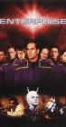

Star Trek: Enterprise
Stephen Klancher
...has seen 98
...has seen 1.6 hours
...has not seen 0 hours

Timeline
Most Recent:
These Are the Voyages...
First Unseen:
Broken Bow, Part 2 (# 3)
...has seen 98
...has seen 1.6 hours
...has not seen 0 hours
Timeline
Most Recent:
These Are the Voyages...
First Unseen:
Broken Bow, Part 2 (# 3)


Stephen Klancher: June 24, 2018
Very cool episode. Cool to see the early rocky alliance with the Andorians.
Stephen Klancher: July 7, 2018 
Nice touch that they changed the intro for the Empire version of Starfleet.